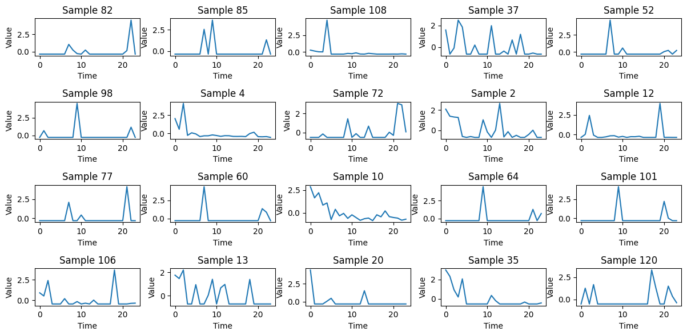
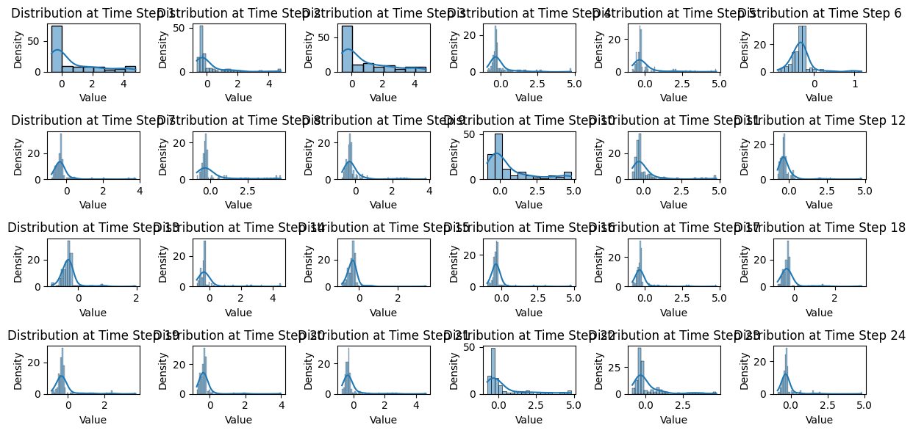
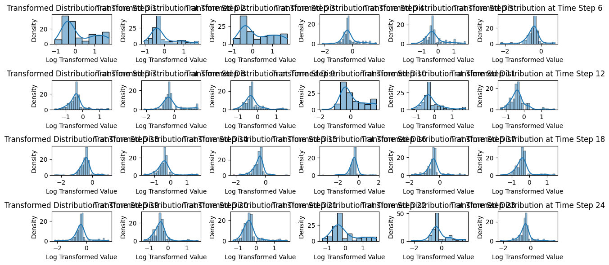

05: Covariance based clustering#
import matplotlib.pyplot as plt
from tslearn.clustering import TimeSeriesKMeans
from tslearn.preprocessing import TimeSeriesScalerMeanVariance
import pandas as pd
import numpy as np
data = pd.read_csv("training_pivot.csv",
index_col="date")
data.index = pd.to_datetime(data.index)
data = data.resample('M').sum()
data = data.T
data
| date | 2018-01-31 | 2018-02-28 | 2018-03-31 | 2018-04-30 | 2018-05-31 | 2018-06-30 | 2018-07-31 | 2018-08-31 | 2018-09-30 | 2018-10-31 | 2018-11-30 | 2018-12-31 | 2019-01-31 | 2019-02-28 | 2019-03-31 | 2019-04-30 | 2019-05-31 | 2019-06-30 | 2019-07-31 | 2019-08-31 | 2019-09-30 | 2019-10-31 | 2019-11-30 | 2019-12-31 |
|---|---|---|---|---|---|---|---|---|---|---|---|---|---|---|---|---|---|---|---|---|---|---|---|---|
| Total | 43347.4855 | 23756.7667 | 37784.6243 | 19860.4246 | 34531.2473 | 2363.1088 | 9649.4321 | 9881.8506 | 11306.1056 | 16066.5439 | 12118.2309 | 6529.3997 | 2171.4008 | 4638.9813 | 3394.3797 | 1482.344 | 6240.3639 | 6227.278 | 9508.7676 | 6331.2085 | 7236.5693 | 13691.0258 | 7062.9143 | 3678.0051 |
| Artigos Decorativos | 24.0525 | 461.5050 | 622.0800 | 126.3650 | 54.4850 | 0.0000 | 0.0000 | 5.2250 | 0.0000 | 97.4050 | 24.6400 | 20.9000 | 0.0000 | 38.7200 | 0.0000 | 0.000 | 655.8850 | 0.000 | 0.0000 | 0.0000 | 0.0000 | 0.0000 | 26.2680 | 0.0000 |
| Bases e Floreiras | 525.7350 | 394.3500 | 379.1060 | 371.2700 | 16.5000 | 0.0000 | 15.5840 | 0.0000 | 0.0000 | 327.7580 | 101.7500 | 0.0000 | 136.0360 | 633.0000 | 7.9750 | 106.700 | 0.0000 | 38.500 | 0.0000 | 0.0000 | 55.0275 | 133.6500 | 0.0000 | 0.0000 |
| Casa | 0.0000 | 49.3250 | 0.0000 | 49.5160 | 0.0000 | 24.3350 | 0.0000 | 101.7500 | 0.0000 | 184.8200 | 0.0000 | 0.0000 | 0.0000 | 31.1850 | 0.0000 | 0.000 | 0.0000 | 0.000 | 0.0000 | 0.0000 | 0.0000 | 0.0000 | 0.0000 | 0.0000 |
| Flores | 3538.5955 | 1526.6135 | 6407.9869 | 378.2920 | 862.7100 | 655.7890 | 157.4625 | 297.1860 | 302.4660 | 466.9227 | 349.3346 | 202.2325 | 322.0722 | 310.7750 | 187.5870 | 178.981 | 193.4625 | 147.246 | 727.3420 | 971.0250 | 134.3540 | 113.2245 | 148.3870 | 0.0000 |
| ... | ... | ... | ... | ... | ... | ... | ... | ... | ... | ... | ... | ... | ... | ... | ... | ... | ... | ... | ... | ... | ... | ... | ... | ... |
| 5995.0 | 0.0000 | 149.2760 | 0.0000 | 183.6860 | 0.0000 | 0.0000 | 0.0000 | 0.0000 | 0.0000 | 0.0000 | 0.0000 | 0.0000 | 0.0000 | 0.0000 | 0.0000 | 0.000 | 0.0000 | 322.030 | 153.1620 | 0.0000 | 0.0000 | 168.9000 | 72.5200 | 11.5731 |
| 5996.0 | 0.0000 | 0.0000 | 329.7000 | 0.0000 | 0.0000 | 0.0000 | 0.0000 | 0.0000 | 0.0000 | 37.8800 | 0.0000 | 24.6000 | 0.0000 | 0.0000 | 0.0000 | 0.000 | 0.0000 | 0.000 | 0.0000 | 0.0000 | 0.0000 | 0.0000 | 0.0000 | 0.0000 |
| 5997.0 | 0.0000 | 0.0000 | 0.0000 | 190.6730 | 0.0000 | 0.0000 | 748.3200 | 0.0000 | 601.1300 | 0.0000 | 0.0000 | 0.0000 | 0.0000 | 269.3922 | 64.3060 | 0.000 | 140.5100 | 0.000 | 195.7500 | 0.0000 | 0.0000 | 0.0000 | 0.0000 | 0.0000 |
| 5998.0 | 942.7000 | 0.0000 | 0.0000 | 0.0000 | 0.0000 | 0.0000 | 0.0000 | 375.2490 | 0.0000 | 695.5960 | 0.0000 | 0.0000 | 0.0000 | 0.0000 | 0.0000 | 0.000 | 151.2610 | 274.790 | 0.0000 | 816.6800 | 1001.4000 | 201.0030 | 295.2180 | 0.0000 |
| 5999.0 | 0.0000 | 0.0000 | 1019.2600 | 0.0000 | 1902.1036 | 0.0000 | 0.0000 | 905.1600 | 0.0000 | 0.0000 | 0.0000 | 0.0000 | 0.0000 | 0.0000 | 0.0000 | 0.000 | 0.0000 | 2144.000 | 0.0000 | 0.0000 | 0.0000 | 0.0000 | 0.0000 | 0.0000 |
125 rows × 24 columns
X_train = data.to_numpy()
# Scaling
X_train = TimeSeriesScalerMeanVariance().fit_transform(X_train)
X_train.shape
(125, 24, 1)
num_samples = 20
sample_indices = np.random.choice(X_train.shape[0], num_samples, replace=False)
# Plot the selected samples
plt.figure(figsize=(12, 6))
for i, idx in enumerate(sample_indices, 1):
plt.subplot(4, 5, i) # Adjust subplot grid as needed
plt.plot(X_train[idx, :, 0])
plt.title(f"Sample {idx}")
plt.xlabel("Time")
plt.ylabel("Value")
plt.tight_layout()

import seaborn as sns
flattened_data = X_train.reshape(-1, X_train.shape[1])
plt.figure(figsize=(12, 6))
for i in range(flattened_data.shape[1]):
plt.subplot(4, 6, i+1) # Adjust subplot grid as needed
sns.histplot(flattened_data[:, i], kde=True)
plt.title(f"Distribution at Time Step {i+1}")
plt.xlabel("Value")
plt.ylabel("Density")
plt.tight_layout()

X_train_log = np.log(X_train + 1)
flattened_data_log = X_train_log.reshape(-1, X_train_log.shape[1])
plt.figure(figsize=(12, 6))
for i in range(flattened_data_log.shape[1]):
plt.subplot(4, 6, i+1)
sns.histplot(flattened_data_log[:, i], kde=True)
plt.title(f"Transformed Distribution at Time Step {i+1}")
plt.xlabel("Log Transformed Value")
plt.ylabel("Density")
plt.tight_layout()

from sklearn import cluster
from sklearn import covariance
alphas = np.logspace(-1.5, 1, num=10)
edge_model = covariance.GraphicalLassoCV(alphas=alphas)
X_train_reshaped = np.reshape(X_train_log, (24, 125))
edge_model.fit(X_train_reshaped)
_, labels = cluster.affinity_propagation(edge_model.covariance_, random_state=0)
labels.shape
C:\Users\Miguel\AppData\Local\Programs\Python\Python310\lib\site-packages\numpy\core\_methods.py:173: RuntimeWarning: invalid value encountered in subtract
x = asanyarray(arr - arrmean)
(125,)
n_labels = labels.max()
names = data.index
for i in range(n_labels + 1):
print(f"Cluster {i + 1}: {', '.join(names[labels == i])}")
Cluster 1: Flores, Natal, 3016.0, 3029.0, 4182.0
Cluster 2: Fontes, Frutos e Vegetais, 3030.0, 3031.0, 3108.0, 3112.0, 3134.0, 4174.0, 5825.0
Cluster 3: 3003.0, 3005.0, 3006.0, 3100.0, 3101.0, 3102.0, 5982.0, 5984.0, 5988.0
Cluster 4: Casa, 3018.0, 3045.0, 3135.0, 3136.0, 4181.0, 4610.0, 5986.0
Cluster 5: 3032.0, 3036.0, 3091.0, 3888.0, 5056.0
Cluster 6: 3028.0, 3034.0, 3037.0, 3041.0, 3092.0
Cluster 7: 3002.0, 3038.0
Cluster 8: Artigos Decorativos, 3039.0, 4175.0
Cluster 9: 3048.0, 3049.0, 3109.0, 4172.0, 4173.0, 5990.0, 5991.0
Cluster 10: Plantas, Árvores e Arbustos, 3009.0, 3011.0, 3012.0, 3050.0, 3086.0
Cluster 11: Tufos e Folhagens, 3008.0, 3054.0, 3084.0, 3114.0, 5985.0, 5992.0, 5996.0
Cluster 12: 3085.0, 3118.0, 4183.0
Cluster 13: 3004.0, 3093.0, 4176.0, 5995.0
Cluster 14: 3094.0, 5820.0
Cluster 15: 3007.0, 3015.0, 3098.0, 3732.0, 3886.0, 4184.0
Cluster 16: 3087.0, 3107.0, 3110.0, 5993.0
Cluster 17: 3010.0, 3040.0, 3111.0
Cluster 18: 3090.0, 3117.0
Cluster 19: 3053.0, 3089.0, 3121.0, 3122.0, 3126.0
Cluster 20: 3047.0, 3062.0, 3088.0, 3095.0, 3129.0, 5998.0
Cluster 21: 4178.0
Cluster 22: Total, Bases e Floreiras, 3013.0, 3051.0, 3096.0, 3128.0, 3131.0, 4179.0
Cluster 23: 3132.0, 5821.0, 5997.0
Cluster 24: 5981.0, 5983.0
Cluster 25: 3014.0, 3104.0, 4024.0, 5208.0, 5994.0
Cluster 26: 3042.0, 4906.0, 5999.0
2D linear manifold and partial correlation strength#
from sklearn import manifold
node_position_model = manifold.LocallyLinearEmbedding(
n_components=2, eigen_solver="dense", n_neighbors=6
)
embedding = node_position_model.fit_transform(X_train_reshaped.T).T
import matplotlib.pyplot as plt
# color and thickness is deternmined by strength of correlation
from matplotlib.collections import LineCollection
min_partial_corr = 0.07
plt.figure(1, facecolor="w", figsize=(10, 8))
plt.clf()
ax = plt.axes([0.0, 0.0, 1.0, 1.0])
plt.axis("off")
# Plot the graph of partial correlations
partial_correlations = edge_model.precision_.copy()
d = 1 / np.sqrt(np.diag(partial_correlations))
partial_correlations *= d
partial_correlations *= d[:, np.newaxis]
# edges are only drawn if partial correlations > min_partial_corr
non_zero = np.abs(np.triu(partial_correlations, k=1)) > min_partial_corr
# Plot the nodes using the coordinates of our embedding
plt.scatter(
embedding[0], embedding[1], s=100 * d**2, c=labels, cmap=plt.cm.nipy_spectral
)
# Plot the edges
start_idx, end_idx = np.where(non_zero)
# a sequence of (*line0*, *line1*, *line2*), where::
# linen = (x0, y0), (x1, y1), ... (xm, ym)
segments = [
[embedding[:, start], embedding[:, stop]] for start, stop in zip(start_idx, end_idx)
]
values = np.abs(partial_correlations[non_zero])
lc = LineCollection(
segments, zorder=0, cmap=plt.cm.hot_r, norm=plt.Normalize(0, 0.7 * values.max())
)
lc.set_array(values)
lc.set_linewidths(15 * values)
ax.add_collection(lc)
# add strength label to each connection
for segment, value in zip(segments, values):
midpoint = np.mean(segment, axis=0)
plt.text(midpoint[0], midpoint[1], f"{value:.2f}", color="black", fontsize=7, ha="center", va="center")
# Add a label to each node. The challenge here is that we want to
# position the labels to avoid overlap with other labels
for index, (name, label, (x, y)) in enumerate(zip(names, labels, embedding.T)):
dx = x - embedding[0]
dx[index] = 1
dy = y - embedding[1]
dy[index] = 1
this_dx = dx[np.argmin(np.abs(dy))]
this_dy = dy[np.argmin(np.abs(dx))]
if this_dx > 0:
horizontalalignment = "left"
x = x + 0.002
else:
horizontalalignment = "right"
x = x - 0.002
if this_dy > 0:
verticalalignment = "bottom"
y = y + 0.002
else:
verticalalignment = "top"
y = y - 0.002
plt.text(
x,
y,
name,
size=8,
horizontalalignment=horizontalalignment,
verticalalignment=verticalalignment,
bbox=dict(
facecolor="w",
edgecolor=plt.cm.nipy_spectral(label / float(n_labels)),
alpha=0.6,
),
)
plt.xlim(
embedding[0].min() - 0.15 * np.ptp(embedding[0]),
embedding[0].max() + 0.10 * np.ptp(embedding[0]),
)
plt.ylim(
embedding[1].min() - 0.03 * np.ptp(embedding[1]),
embedding[1].max() + 0.03 * np.ptp(embedding[1]),
)
(-0.24572712746944725, 0.22887236265426197)